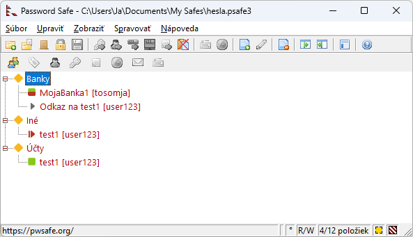
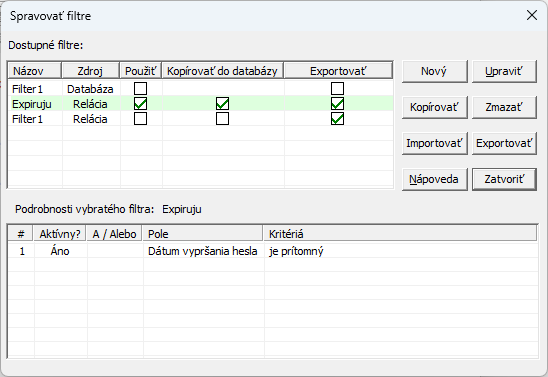

"Filter" je kritérium (alebo sada kritérií), ktorému záznam buď zodpovedá, alebo nezodpovedá.
Password Safe vám umožňuje definovať filtre a zobraziť iba tie záznamy, ktoré zodpovedajú
danému filtru. Filter môžete definovať jednorázovo alebo môžete definovať niekoľko filtrov,
pomenovať ich a trvalo ich uložiť na opakované použitie.
Filtre môžu byť uložené buď spolu s databázou, alebo sa dajú exportovať/importovať -
napr. na zdieľanie rovnakého filtra medzi viacerými databázami.
Ako vidíte, každý filter pozostáva z jedného alebo viacerých riadkov,
kde každý riadok definuje kritériá pre dané pole.
Podmienky definované v každom riadku môžu byť buď "a", alebo "alebo" ako podmienka definovaná
v predchádzajúcom riadku. Toto vám umožňuje definovať nasledujúce druhy filtrov:
Všetky záznamy s používateľským menom obsahujúcim "joe" alebo "Joe" alebo "JOE":
Všetky záznamy s používateľským menom "Joe" (presne) vytvorené po 1. januári 2025
Všetky záznamy s používateľským menom obsahujúcim "joe" alebo "mary"
Ako vidíte, filtre môžu byť ľubovoľne zložité.
Stĺpce v tabuľke filtrov sú nasledovné:
'#' – Toto je číslo riadku. Zobrazuje sa pre prehľadnosť a nedá sa zmeniť.
'?' – Začiarkavacie políčko v tomto stĺpci určuje, či je riadok aktívny alebo nie.
Pri použití filtra sa používajú iba aktívne riadky. Kliknutím na začiarkavacie políčko riadok povolíte/zakážete.
'+' – Kliknite na toto políčko, ak chcete vložiť nový riadok pod daný riadok.
'-' – Kliknite na toto políčko, ak chcete odstrániť aktuálny riadok. Poznámka:
Keďže odstránenie riadku je trvalé, možno ho budete radšej chcieť zakázať.
'A/Alebo' – Toto vám umožňuje určiť vzťah medzi pravidlom, ktoré pridávate, a predchádzajúcim pravidlom.
'Pole' – Vyberte vstupné pole, ktoré vás zaujíma, napr. používateľské meno, názov, skupina, poznámky atď.
'Kritériá' – Definujte hodnotu, ktorá vás zaujíma pre vybrané pole. Po výbere poľa kliknutím na toto pole
sa zobrazí dialógové okno, ktoré vám umožní zadať kritériá, ktoré sa zobrazia v tabuľke.
Použitie filtra
Po definovaní filtra kliknutím na tlačidlo "Použiť" sa filter použije
na záznamy v databáze, pričom dialógové okno Nastaviť filter zobrazenia zostane otvorené.
Toto je užitočné na opravu a spresnenie filtra na základe výsledkov.
Kliknutím na tlačidlo "OK" sa filter tiež použije, ale dialógové okno Nastaviť filter zobrazenia sa zavrie.
Keď je filter aktívny, v stavovom riadku sa zobrazuje počet zobrazených záznamov v porovnaní s celkovým počtom
v databáze a v pravej časti tohto riadku sa zobrazí malý červeno-biely štvorček ().
Zobrazené položky sú navyše zobrazené červenou farbou.

Správa filtrov
Nová/upraviť filter je dobrý spôsob, ako pracovať s filtrami pre jednorazovú úlohu.
Ak však zistíte, že máte niekoľko filtrov, ktoré chcete používať opakovane, môžete ich uložiť a efektívne spravovať pomocou dialógového okna
"Zobraziť > Filtre > Spravovať...".

Dialógové okno Spravovať filtre má dve tabuľky. Horná tabuľka zobrazuje zoznam filtrov
a dolná tabuľka zobrazuje obsah aktuálne vybratého filtra.
Ak chcete upraviť existujúci filter, vyberte ho a potom kliknite na Upraviť.
Ak chcete použiť existujúci filter, kliknite na začiarkavacie políčko Použiť v riadku požadovaného filtra.
Upozorňujeme, že v danom čase je možné použiť iba jeden filter.
Ukladanie filtrov
Filtre je možné uložiť buď ako súčasť aktuálnej databázy, alebo externe ako súbory XML.
Externé ukladanie filtrov je dobrý spôsob, ako ich zdieľať medzi databázami, zatiaľ čo ich ukladanie
ako súčasti databázy zabezpečuje ochranu potenciálne citlivých informácií v definíciách filtrov.
Uloženie filtrov do externého súboru: Začiarknite políčko
Exportovať, všetkých filtrov ktoré chcete uložiť, a potom kliknite na tlačidlo Exportovať.
Uloženie filtrov do aktuálnej databázy: Začiarknite políčko Kopírovať do
databázy a potom kliknite na tlačidlo Kopírovať.
Načítanie externe uloženého filtra: Kliknite na tlačidlo Importovať a vyberte XML súbor kde sú uložené filtre.
Poznámka:
Po spustení aplikácia Password Safe vyhľadá súbor s názvom autoload_filters.xml v
rovnakom adresári ako súbor pwsafe.cfg (predvolene C:\Users\MenoPoužívateľa\AppData\Local\PasswordSafe).
Ak takýto súbor existuje, automaticky sa importuje a filtre, ktoré obsahuje, sú pripravené na použitie.
Toto je užitočné, ak máte sadu filtrov, ktoré chcete zdieľať medzi viacerými databázami bez toho, aby ste ich museli zakaždým ručne importovať.


 ).
Zobrazené položky sú navyše zobrazené červenou farbou.
).
Zobrazené položky sú navyše zobrazené červenou farbou.